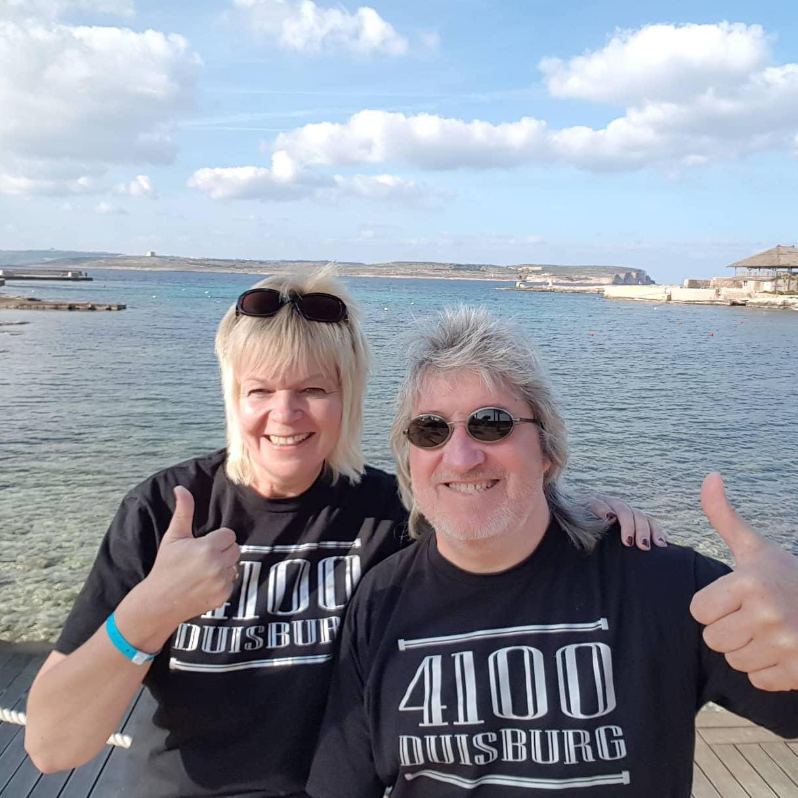
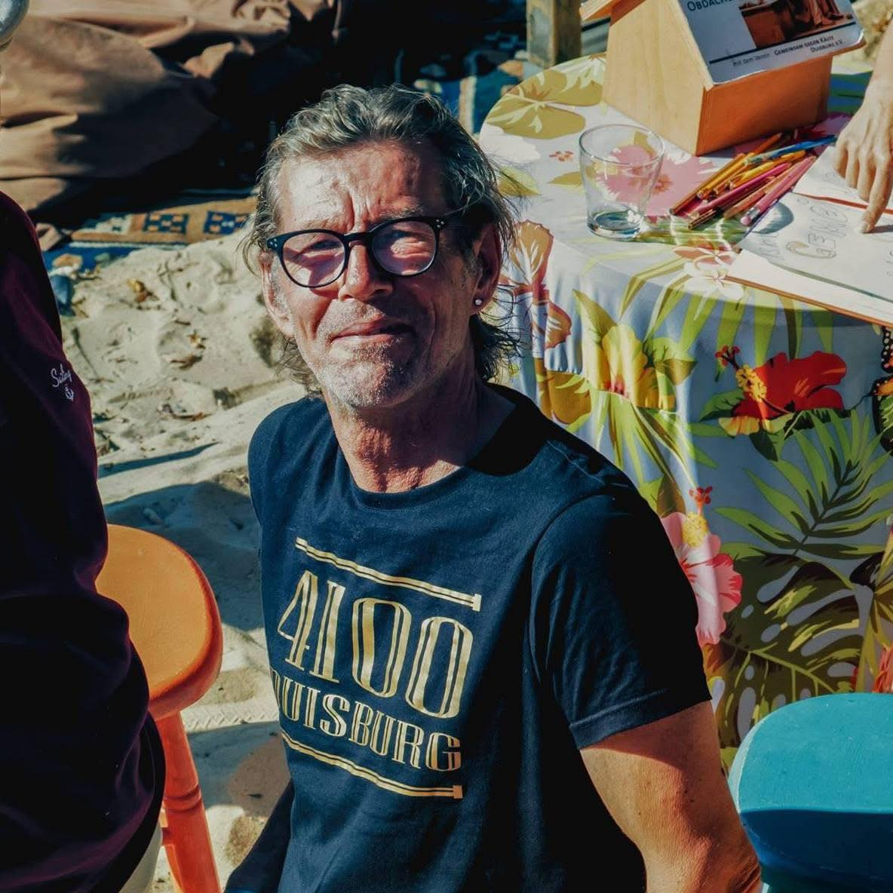
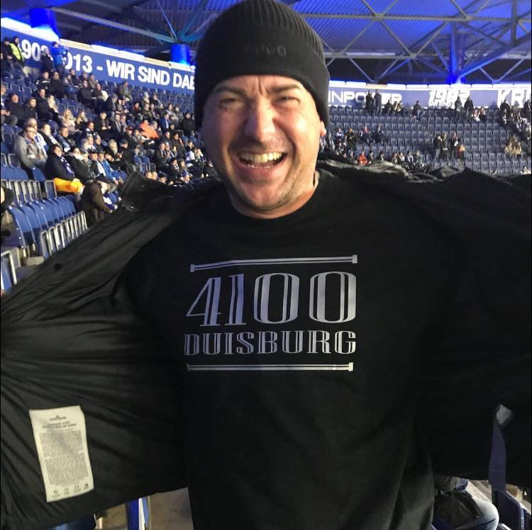
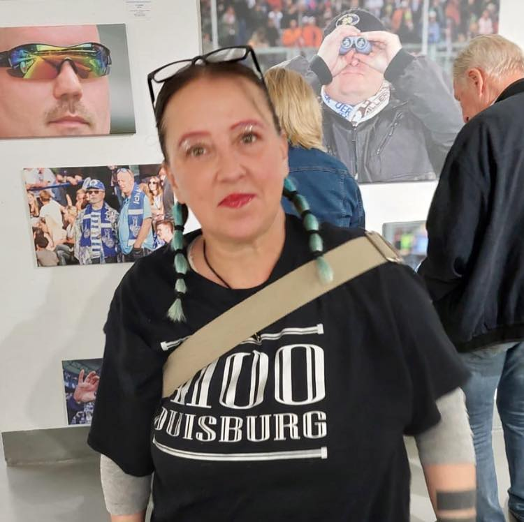
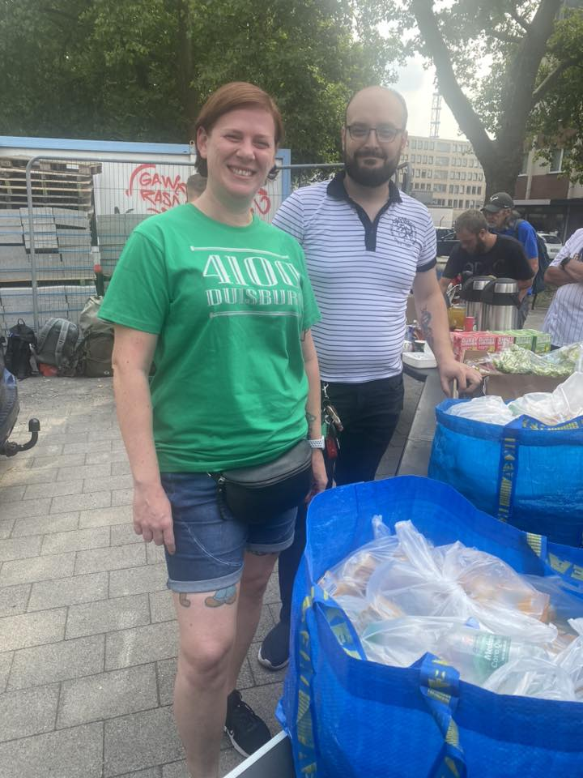
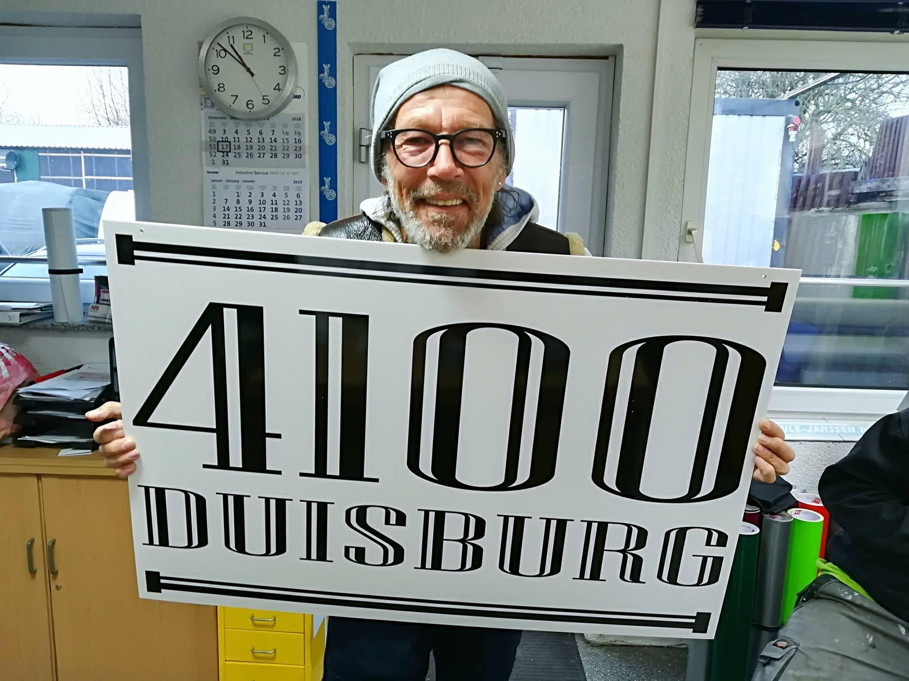

Die Strasse trägt 4100
Alte Postleitzahl — NEUE HOFFNUNG: MIT STIL GUTES TUN
Dein Shirt - ihre Chance. FÜR DUISBURGS OBDACHLOSE
Jeder Kauf unterstützt direkt Hilfsprojekte, kleinere Vereine, sowie Einrichtungen, die sich für Menschen ohne festen Wohnsitz einsetzen. 4100 Duisburg ist eine klare Botschaft.
Wer 4100 trägt, sendet eine klare Botschaft: Wir sehen euch - wir stehen zusammen. Wer das Label trägt zeigt Haltung und macht auf ein Thema aufmerksam,das oft übersehen wird oder schnell wieder in Vergessenheit gerät.
4100 will nicht nur spenden, sondern Bewusstsein schaffen. Für ein Duisburg, in dem niemand auf der Strasse leben muss. Für eine Stadt, in der Menschlichkeit nicht vom Wohnsitz abhängt.





Wieso Weshalb Warum
Was 2017 als nostalgischer Facebook-Post mit der alten Duisburger Postleitzahl "4100" begann, ist heute mein Herzensprojekt. Die überraschend große Resonanz brachte mich auf die Idee, T-Shirts zu produzieren - aber von Anfang an stand fest: Ich will damit nicht meine eigenen Taschen füllen. Ein Teil des Erlöses aus dem Merchandise-Verkauf geht an den Verein "Herzenswärme Duisburg e.V." in Ruhrort, weil obdachlose Menschen aus den unterschiedlichsten Gründen Unterstützung brauchen.
4100Duisburg - Tragen hilft
Ich kenne die Strasse aus eigener Erfahrung - war selbst einmal obdachlos in Duisburg. Über zwei Jahre lang fuhr ich den Medi-Bus für "Gemeinsam gegen Kälte" und lernte viele Menschen aus der Szene kennen.
Ein Label für die Strasse - gegen ein Leben auf der Strasse
Jetzt plane ich die Rückkehr nach Duisburg und möchte das Projekt deutlich vergrößern: Einen eigenen gemeinnützigen Verein gründen und eine Webseite aufbauen. Mein Ziel ist es, mit noch mehr Menschen den Menschen in unserer Stadt zu helfen.

Mehr zu Die Strasse trägt 4100
Unterstützen
Folge und auf Social Media
Facebook Die Strasse trägt 4100
Instagram @die_strasse_traegt_4100
E-Mail schreiben
Schreib uns in das Kontaktformuar, wenn Du Fragen hast oder bestellen möchtest. Nenne dein Produkt (T-Shirt, Hoodie oder Basecap) und Deine Größe.
Wir melden uns dann persönlich bei Dir zurück.
Spendenbeitrag leisten
T-Shirt 29 €
Hoodie 49 €
Basecap 20 €
Ein Teil des Erlöses geht an die Obdachlosenhilfe in Duisburg.
Dein Paket kommt zu Dir
oder Du verabredest Dich mit Sammy auf einen Bohnenkaffee.
mit ganz viel Herz!!!
Herzenswärme Duisburg e.V.
Wir sind ein wohltätiger Verein, der sich leidenschaftlich für die Unterstützung von Obdachlosen einsetzt. Unsere Mission besteht darin, Wärme und Hoffnung in das Leben derjenigen zu bringen, die es am dringendsten benötigen.
www.herzenswärme-duisburg.nrw